The formula is implemented in the routine lyapunov in a
straightforward way. (The program lyap_r implements the very similar
algorithm of Ref. [70] where only the closest neighbor is followed for
each reference point. Also, the Euclidean norm is used.) Apart from parameters
characterizing the embedding, the initial neighborhood size is of
relevance: The smaller , the large the linear range of S, if there
is one. Obviously, noise and the finite number of data points limit
from below. It is not always necessary to extend the average in Eq.( ) over
the whole available data, reasonable averages can be obtained already with a
few hundred reference points 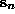. If some of the reference points have very
few neighbors, the corresponding inner sum in Eq.(
) over
the whole available data, reasonable averages can be obtained already with a
few hundred reference points 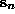. If some of the reference points have very
few neighbors, the corresponding inner sum in Eq.( ) is dominated by
fluctuations. Therefore one may choose to exclude those reference points which
have less than, say, ten neighbors. However, discretion has to be applied with
this parameter since it may introduce a bias against sparsely populated
regions. This could in theory affect the estimated exponents due to
multifractality. Like other quantities, Lyapunov estimates may be affected by
serial correlations between reference points and neighbors. Therefore, a
minimum time for |n-n'| can and should be specified here as well. See also
Sec.
) is dominated by
fluctuations. Therefore one may choose to exclude those reference points which
have less than, say, ten neighbors. However, discretion has to be applied with
this parameter since it may introduce a bias against sparsely populated
regions. This could in theory affect the estimated exponents due to
multifractality. Like other quantities, Lyapunov estimates may be affected by
serial correlations between reference points and neighbors. Therefore, a
minimum time for |n-n'| can and should be specified here as well. See also
Sec. .
.
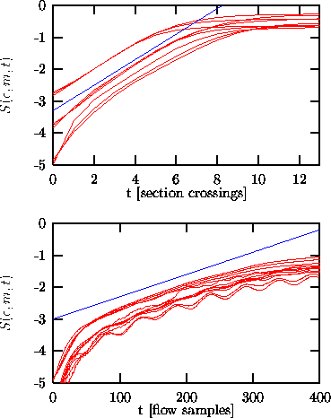
Figure: Estimating the maximal Lyapunov exponent of the COlaser data. The top panel shows results for the Poincaré map data, where the average time interval 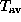 is 52.2 samples of the flow, and the straight line indicates 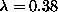. For comparison: The iteration of the radial basis function model of Fig.
yields
=0.35. Bottom panel: Lyapunov exponents determined directly from the flow data. The straight line has slope 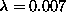. In good approximation, 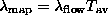. Here, the time window w to suppress correlated neighbors has been set to 1000, and the delay time was 6 units.
Let us discuss a few typical outcomes. The data underlying the top panel of
Fig.  are the values of the maxima of the CO
are the values of the maxima of the CO laser
data. Since this laser exhibits low dimensional chaos with a reasonable noise
level, we observe a clear linear increase in this semi-logarithmic plot,
reflecting the exponential divergence of nearby trajectories. The exponent is
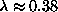 per iteration (map data!), or, when introducing the
average time interval, 0.007 per 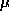s. In the bottom panel we show the result
for the same system, but now computed on the original flow-like data with a
sampling rate of 1 MHz. As additional structure, an initial steep increase and
regular oscillations are visible. The initial increase is due to non-normality
and effects of alignment of distances towards the locally most unstable
direction, and the oscillations are an effect of the locally different
velocities and thus different densities. Both effects can be much more dramatic
in less favorable cases, but as long as the regular oscillations possess a
linearly increasing average, this can be taken as the estimate of the Lyapunov
exponent. Normalizing by the sampling rate, we again find 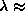
0.007 per s, but it is obvious that the linearity is less pronounced then
for the map-like data. Finally, we show in Fig.
laser
data. Since this laser exhibits low dimensional chaos with a reasonable noise
level, we observe a clear linear increase in this semi-logarithmic plot,
reflecting the exponential divergence of nearby trajectories. The exponent is
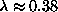 per iteration (map data!), or, when introducing the
average time interval, 0.007 per 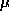s. In the bottom panel we show the result
for the same system, but now computed on the original flow-like data with a
sampling rate of 1 MHz. As additional structure, an initial steep increase and
regular oscillations are visible. The initial increase is due to non-normality
and effects of alignment of distances towards the locally most unstable
direction, and the oscillations are an effect of the locally different
velocities and thus different densities. Both effects can be much more dramatic
in less favorable cases, but as long as the regular oscillations possess a
linearly increasing average, this can be taken as the estimate of the Lyapunov
exponent. Normalizing by the sampling rate, we again find 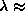
0.007 per s, but it is obvious that the linearity is less pronounced then
for the map-like data. Finally, we show in Fig.  an example
of a negative result: We study the human breath rate data used before. No
linear part exists, and one cannot draw any reasonable conclusion. It is worth
considering the figure on a doubly logarithmic scale in order to detect a power
law behavior, which, with power 1/2, could be present for a diffusive growth
of distances. In this particular example, there is no convincing power law
either.
an example
of a negative result: We study the human breath rate data used before. No
linear part exists, and one cannot draw any reasonable conclusion. It is worth
considering the figure on a doubly logarithmic scale in order to detect a power
law behavior, which, with power 1/2, could be present for a diffusive growth
of distances. In this particular example, there is no convincing power law
either.
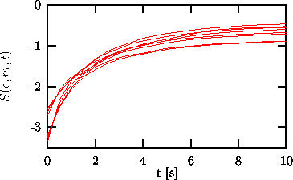
Figure: The breath rate data (c.f. Fig.